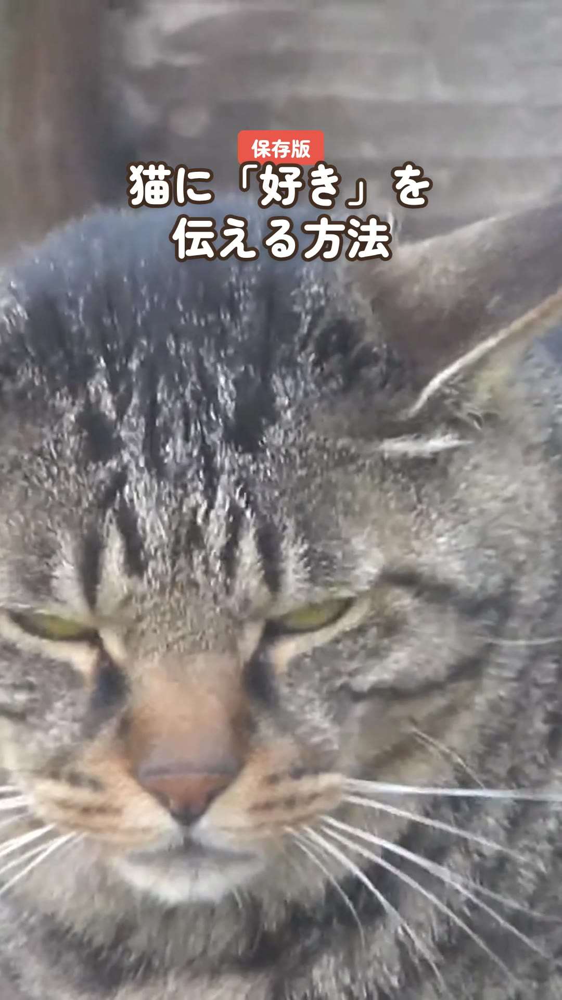

猫に「好き」を伝える方法4つ
2026-10-19・Instagramで公開
ゆっくりまばたきを返してくれたら、両想いのサインです。
※この子は「じと目先輩」。ジャパンネコの常連さんです。「…なにか用かにゃ？」
※この動画は CC BY-SA 4.0 で公開しています

素材: Nesnad（CC BY-SA 4.0／Wikimedia Commons）、FASTILY（CC BY-SA 4.0／Wikimedia Commons）、Brion VIBBER（CC BY-SA 3.0／Wikimedia Commons）、the Technophant（CC BY-SA 4.0／Wikimedia Commons）